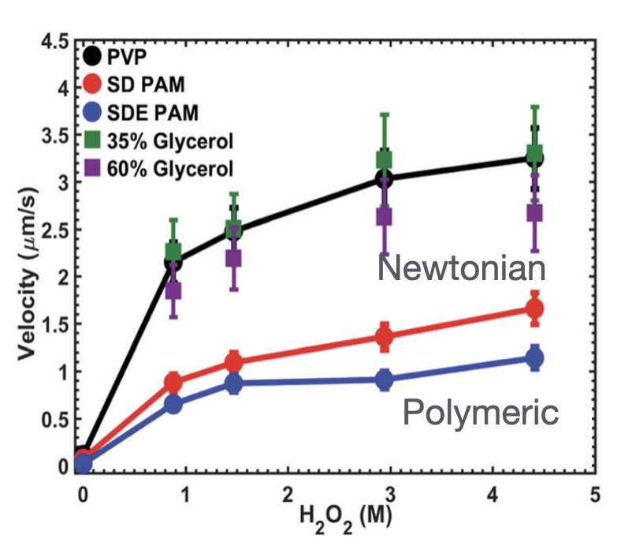

Viscoelasticity Reshapes Janus-Particle Dynamics

Stronger rotational diffusion with faster motion
Gomez-Solano et al., PRL, 2016

Propulsion reduced in polymer solutions
Saad & Natale, Soft Matter, 2019

Active motion suppressed in polymer solutions
Raman et al., ACS Phys. Chem. Au, 2023
Experiments reveal rich but noise-dominated dynamics — the intrinsic propulsion speed is hard to isolate. To probe it cleanly, we turn to theory.
Viscoelastic Propulsion of a Spherical Janus Particle

Datt et al., J. Fluid Mech., 2017
Weakly viscoelastic limit → second-order fluid model
The first-order viscoelastic correction is antisymmetric in surface coverage.
For a half-coated sphere, the leading-order speed correction vanishes.
But what if the Janus particle is not spherical?
Model: a spheroidal self-diffusiophoretic particle

- Solve the concentration and flow fields in prolate spheroidal coordinates \((\tau,\zeta)\)
- Shape parameter: eccentricity \(e=\sqrt{a^2-b^2}/a\)
- Activity parameter: catalytic coverage \(\zeta_0\)
Concentration gradients drive surface slip

Surface flux \(\to\) Concentration field
\[ \frac{\partial C}{\partial t} + \boldsymbol{u}\cdot\nabla C = D\nabla^2 C, \quad \left. D\boldsymbol{n}\cdot\nabla C \right|_{\tau=\tau_0,\zeta<\zeta_0} = -A \]
\(C\): solute concentration; \(\boldsymbol{u}\): fluid velocity; \(D\): solute diffusivity; \(A\): surface activity / fixed solute flux on the active cap; \(\boldsymbol{n}\): unit normal.
Tangential gradient \(\to\) Phoretic slip
\[ \boldsymbol{u}_s = M(\boldsymbol{I}-\boldsymbol{n}\boldsymbol{n})\cdot \nabla C \]
\(M\): phoretic mobility; \((\boldsymbol{I}-\boldsymbol{n}\boldsymbol{n})\): tangential projection operator.
Slip velocity \(\to\) Force-free propulsion
\[ \boldsymbol{u}(\tau=\tau_0) = \boldsymbol{u}_s(\zeta)+\boldsymbol{U}, \]
\[ \int_S \boldsymbol{n}\cdot\boldsymbol{\sigma}\,\mathrm{d}S = \boldsymbol{0} \]

biological propulsion analogy
Diffusion-dominated solute transport
Diffusion-dominated solute field
\[ \nabla^2 c=0, \qquad \left.\boldsymbol{n}\cdot\nabla c\right|_{\tau=\tau_0} = \begin{cases} -1, & \zeta\le \zeta_0 \quad \text{active},\\ 0, & \zeta>\zeta_0 \quad \text{inert}, \end{cases} \qquad c|_{\tau\to\infty}=0 \]
\(c\): dimensionless relative solute concentration; \(\tau=\tau_0\): particle surface.
Series solution and induced slip
\[ c(\tau,\zeta) = \sum_{n=0}^{\infty} \rho_n Q_n(\tau)P_n(\zeta) \]
\[ \implies u_s(\zeta) = \tau_0\sum_{n=1}^{\infty} B_n\frac{P_n^1(\zeta)}{\sqrt{\tau_0^2-\zeta^2}} \]
\(P_n,Q_n\): Legendre functions; \(\rho_n\): coefficients set by the flux boundary condition; \(B_n=-\rho_n Q_n(\tau_0)\).
Note: finite-\(\mathrm{Pe}\) coupling
At finite \(\mathrm{Pe}\), advection couples the solute field back to the flow. Then the rheology can also affect the concentration and the slip generated inside the interaction layer.

Newtonian baseline
Weakly viscoelastic: expand in \(\mathrm{De}\ll 1\)
\[ \{\boldsymbol{u}, p, \boldsymbol{U}\} = \{\boldsymbol{u}_0, p_0, \boldsymbol{U}_0\} + \mathrm{De}\{\boldsymbol{u}_1, p_1, \boldsymbol{U}_1\} + \mathcal{O}(\mathrm{De}^2) \]
The zeroth order is the Newtonian problem, valid for any eccentricity, with a known speed:
\[ U_0 = -\frac{\tau_0}{2} \int_{-1}^{1} u_s \frac{\sqrt{1-\zeta^2}}{\sqrt{\tau_0^2-\zeta^2}} \,\mathrm{d}\zeta \]
Poehnl et al., J. Phys.: Condens. Matter, 2020; Popescu et al., Eur. Phys. J. E, 2010

Linearity makes the Newtonian speed symmetric about half-coating: \(U_0(\zeta_0)=U_0(-\zeta_0)\).
The spherical cancellation is a symmetry

In a second-order fluid, a mirror reflection must be paired with De → −De:
\[U(\zeta_0, \mathrm{De}) = U(-\zeta_0, -\mathrm{De})\]
Half-coating is its own mirror ⟹ U even in De: the O(De) correction vanishes, leading correction is O(De²).
Eccentricity revives the correction

Half-coated particle: \(\zeta_0=0\)
- Sphere: \(U_1=0\), protected by symmetry
- Spheroid: eccentricity breaks the cancellation
- Slender particles: pronounced speed enhancement
Summary
- Spheres — the half-coated correction vanishes, protected by reflection symmetry
- Spheroids — eccentricity breaks it; slender particles are strongly enhanced
- General principle — symmetry breaks only when both shape anisotropy and fluid nonlinearity are present

Qiang Zhao
First author · PhD student, Peking University